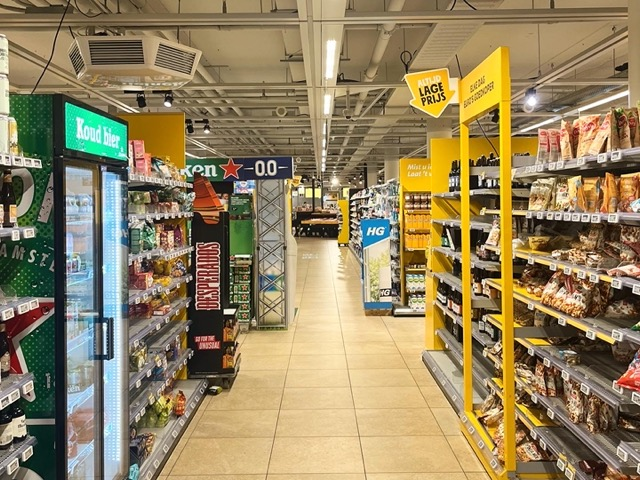

Barefoot at Jumbo Supermarket
Posted on
Hello from Jumbo supermarket! For the last few days I have switched to barefoot in almost all outdoor occasions except for the working hours. Go for grocery? Go for running? Bike broken, go to repair shop? Going to downtown Utrecht to meet with a friend? Yes, all barefoot. There is another exception though: Tomorrow we’ll join Zeist municipality’s welcome event, and I’ll wear sandals there, because it’s formal!
Enjoy the scenery from the supermarket and sorry for the lines not being straight in the first photo.
By the way, supermarket floor is too cold 🥶
